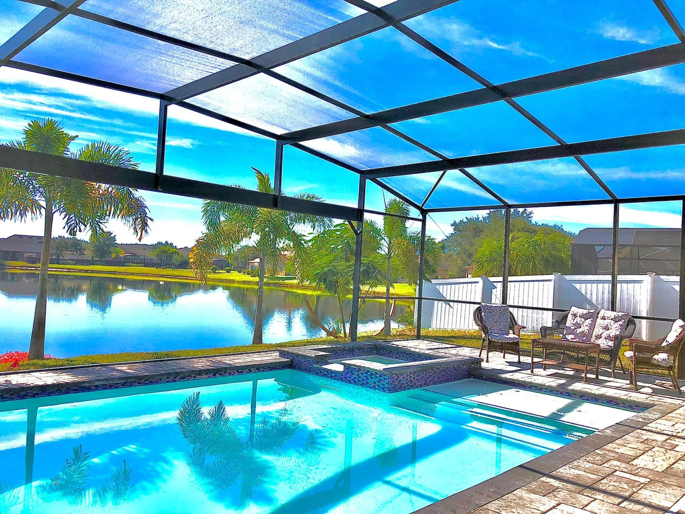
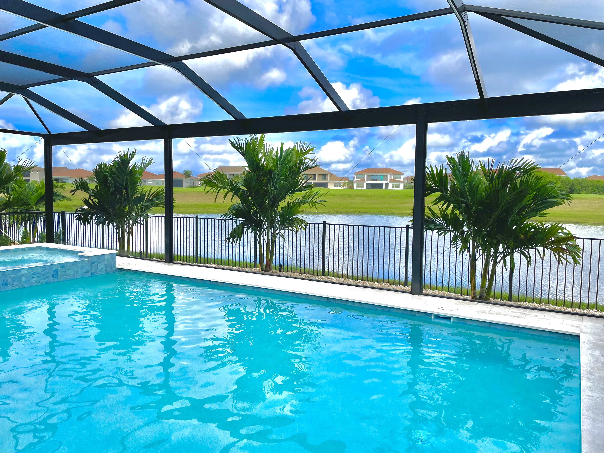

Durable Aluminum Structures
High-strength aluminum frames engineered for Florida weather.
Installation · Repair · Re-Screening
Simple Screen Service designs, installs, and repairs durable pool screen enclosures across Central Florida. Our aluminum pool cages protect your outdoor space from insects, debris, and harsh weather while maintaining a clean open view.
Pool screen enclosures are essential for Florida homes. They protect your pool from insects, falling debris, and harsh weather while maintaining a comfortable outdoor environment. Simple Screen Service installs durable aluminum pool cages designed to withstand Florida conditions while maintaining a clean, modern architectural look.




Drag the slider to reveal the transformation of this pool screen enclosure project.

 BEFORE
AFTER
BEFORE
AFTER
Simple Screen Service provides professional screen enclosure repair across Central Florida including Orlando, Kissimmee, Clermont, Winter Garden, and surrounding areas. Whether you need pool cage repair, patio screen replacement, or full re-screening, our team delivers fast, clean, and reliable service built for Florida weather.
If you're searching for screen enclosure repair near me, our experienced technicians are ready to restore your enclosure quickly and professionally.
Over time pool screens can become torn, sagging, or damaged by storms. Our technicians provide professional re-screening and structural aluminum repair to restore your enclosure.
High-strength aluminum frames engineered for Florida weather.
Professional grade screen designed for visibility and durability.
Our enclosures maintain open views while enhancing your outdoor space.
Experienced technicians delivering detail-driven workmanship.
Orlando · Kissimmee · Clermont · Winter Garden · Windermere · St Cloud
Most pool screen enclosures last between 8–12 years depending on weather exposure and maintenance. We use high-quality materials designed for Florida conditions.
Costs vary depending on damage, size, and materials. Simple Screen Service provides free estimates to give you an accurate price for your project.
Yes, we repair and reinforce aluminum frames, including storm damage and structural issues.
Most projects are completed within 1–3 days depending on size and condition.
Our team provides professional screen enclosure services across:
Call (407) 405-5790 or contact us today to schedule a consultation.
Request Free Estimate